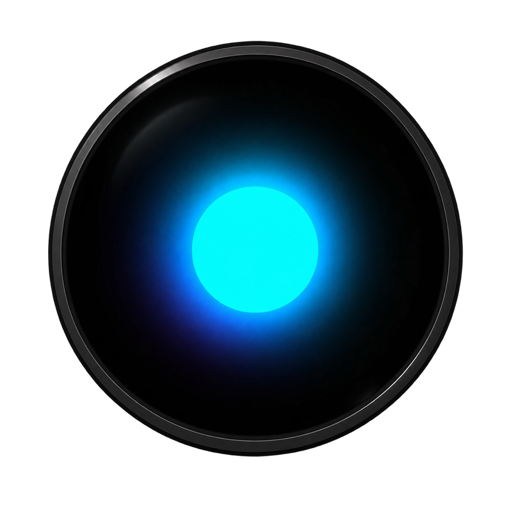
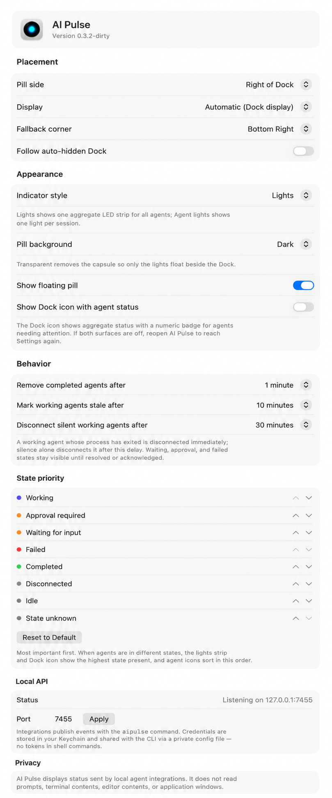

An ambient macOS light strip for AI coding agents. Eight virtual LEDs beside your Dock show, at a glance, whether anything is running, waiting on you, finished, or broken.
No per-model distinction and no counters — one aggregate signal across every agent you have running. Each state is a distinct animation, and each is also distinguishable without relying on color alone.
A cyan comet streaks while an agent runs.
Breathes orange when an agent waits for input or approval.
Double-blinks red when a session breaks.
All eight settle to solid green.
A slow aurora drifts while sessions sit quiet.
Dark when nothing is connected.
Reduce Motion replaces every animation with a static treatment. A per-agent presentation — one LED per session instead of one aggregate strip — is available under Settings → Appearance → Indicator style.
The strip floats in the unused space next to the Dock — visible while you work, out of the way when you don't need it.
/Applications and launch it.
The aipulse CLI ships inside the bundle at
AI Pulse.app/Contents/Helpers/aipulse. Building from source needs macOS 14+
and an Xcode 16 / Swift 6 toolchain — see the
README.
Right-click the pill → Settings… to adapt AI Pulse to your setup.

AI Pulse listens on 127.0.0.1:7455. Anything that can make a local HTTP
request can drive the strip.
Register aipulse claude-hook in your Claude Code settings and sessions appear on the strip automatically.
Drop the bundled aipulse-pi.ts extension into ~/.pi/agent/extensions/ and reload.
Push state from any script with the aipulse CLI or the loopback HTTP API.
aipulse agent upsert \
--id "claude-code:$PWD:$SESSION_ID" \
--name "Claude Code" --provider anthropic \
--instance "$(basename "$PWD")" \
--state working --message "Implementing Dock placement"
aipulse agent update --id "..." --state waitingForInput --sequence 2
aipulse agent remove --id "..."
aipulse agents # list everything the strip knows
On launch AI Pulse stores a bearer token in the Keychain and writes
~/Library/Application Support/AIPulse/cli.json (mode 0600), so the CLI
authenticates without tokens ever appearing in shell commands.
AI Pulse displays status sent by local agent integrations. It does not read prompts, terminal contents, editor contents, or application windows.
The server binds to the loopback interface only, caps request sizes, validates every payload, rejects unsafe URL schemes, and never executes anything it receives.
{kind=link}